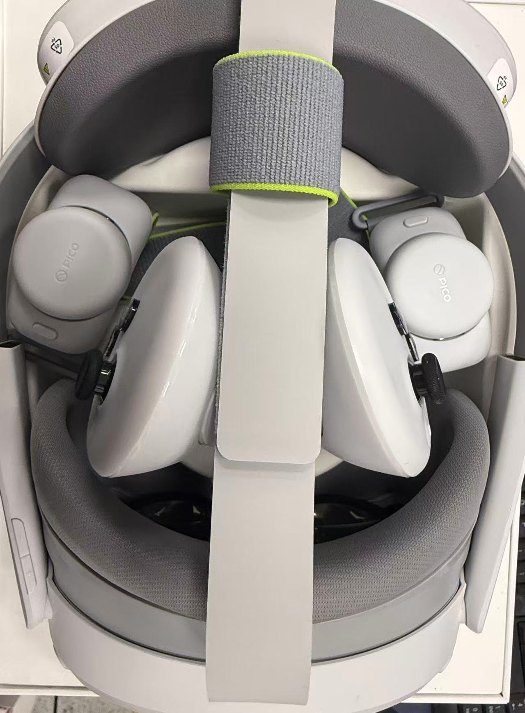
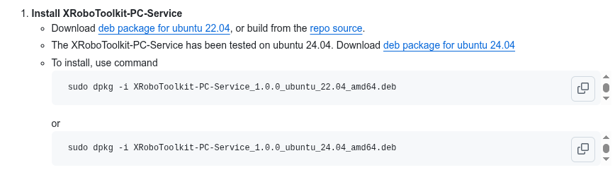
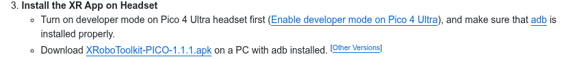
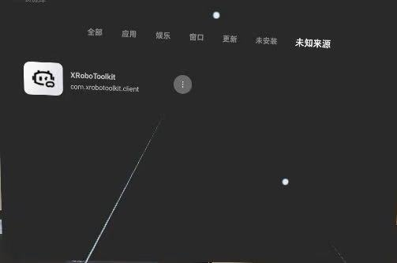
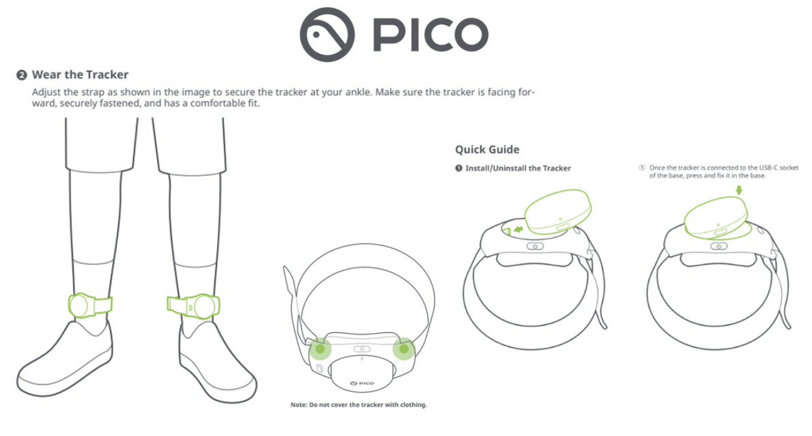
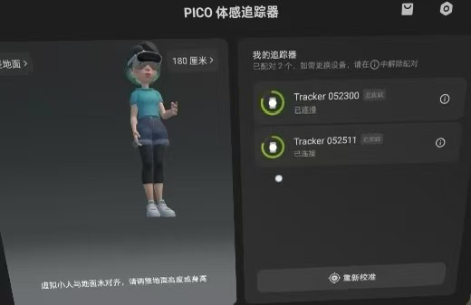
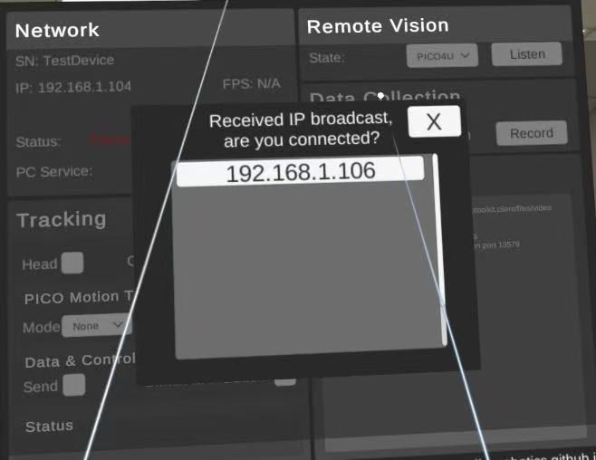
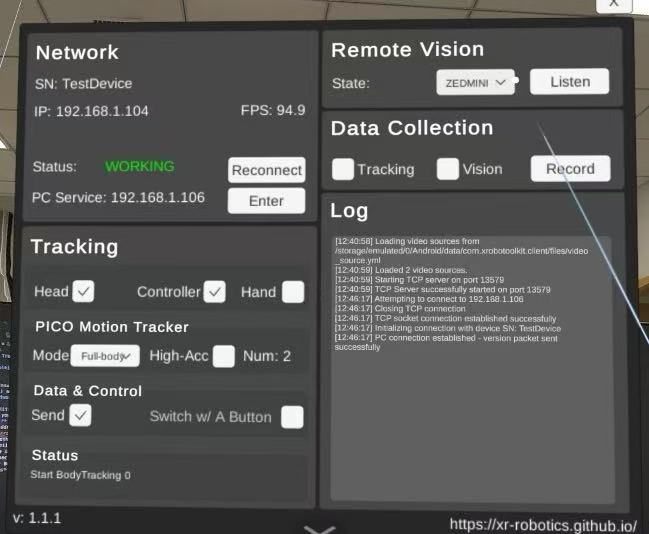
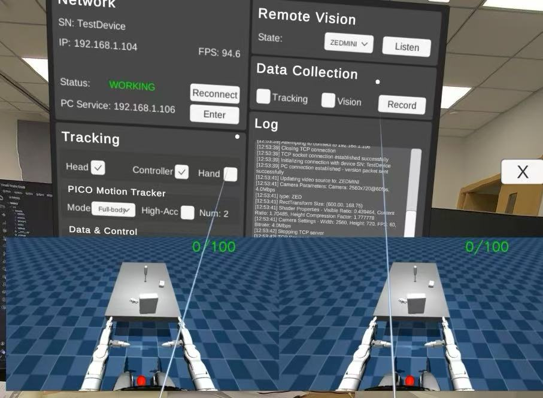

Teleop Setup¶
VR teleoperation in SIMPLE. Built upon modifications to the GR00T decoupled WBC codebase, it allows for whole-body control and data collection via a PICO VR headset.
🛠 Installation¶
Please ensure that the main SIMPLE environment is successfully installed before proceeding. For detailed environment setup, please refer to the SIMPLE installation.
🥽 VR Teleop Setup¶
The following setup process refers to the GR00T-WholeBodyControl VR Teleop Setup.
1. Required Hardware¶
PICO 4 / PICO 4 Ultra headset
2x PICO controllers
2x PICO motion trackers


2. Install XRoboToolkit¶
XRoboToolkit bridges the connection between your workstation and the VR headset. It consists of a PC service and a PICO application.
2.1. PC Service (Host Machine)¶
Navigate to the XR-Robotics GitHub repository.
Follow the “Install XRoboToolkit-PC-Service” instructions provided there to install the service on your workstation.


2. PICO App (VR Headset)¶
Put on your PICO headset and complete the following steps inside the VR environment:
Complete the initial quick setup and ensure the headset is connected to Wi-Fi.
(Optional) Ensure Developer Mode is enabled (
Settings→Developer). Note: It is generally okay if you cannot find this setting.Open the built-in Browser application.
Type “xrobotoolkit” in the search bar and navigate to the XR-Robotics GitHub page.
Scroll down to the releases section and use the PICO trigger to download the APK file:
XRoboToolkit-PICO-1.1.1.apk.


Open the Manage Downloads section (located at the top right corner of the browser page) and click on the downloaded
.apkfile.Select Install. Once the installation is complete, the application will appear in the Unknown section of your App Library.


🕹️ Teleop Tutorial¶
🎉 Ready to Go! Once you have successfully set up SIMPLE environment and installed the XRoboToolkit on both your host machine and PICO headset, your hardware and software are fully equipped. You can now start performing teleoperation to collect data within SIMPLE! Let’s dive into the operational steps below. 👇
1. Launch the Teleoperation Script¶
To start the teleoperation server and load a specific simulation environment, open your terminal and run the following command from the root of your SIMPLE directory:
python src/simple/cli/teleop_decoupled_wbc.py simple/G1WholebodyOpenTrashCanTeleop-v0 \
--target=graspnet1b:0 --sim-mode=mujoco --record --no-headless
Command Arguments Explained:
env_id(The Environment): This is the first argument (e.g.,simple/G1WholebodyOpenTrashCanTeleop-v0). It defines the task scene. You can replace it with any of our currently supported environments:simple/G1WholebodyOpenTrashCanTeleop-v0simple/G1WholebodyPickAndPlaceAndHugContainerTeleop-v0simple/G1WholebodyLocomotionPickBetweenTablesTeleop-v0simple/G1WholebodyHandoverTeleop-v0
--target(The Object): Specifies the interaction target using the format<dataset_name>:<object_id>.Modify ID: Change the integer to load different objects (e.g.,
--target=graspnet1b:12).Modify Dataset: Switch the source from
graspnet1btoobjaverse(e.g.,--target=objaverse:5).
2. PICO Motion Tracker Setup¶


2.1 Attachment & Visibility¶
Strap one PICO motion tracker to your left ankle and one to your right ankle.Scrunch down any baggy clothing to ensure the trackers are fully visible to the headset cameras. Ensure the side with the light indicator faces upward.
2.3 Pairing Procedure¶
Clear Old Devices: Click the “i” icon next to each currently listed tracker and select Unpair.
Enter Pairing Mode: Once cleared, click the “Pair” button in the top right corner.
Sync Trackers: Press and hold the button on top of each tracker for 6 seconds. The indicator lights will flash red and blue when they enter pairing mode.
2.4 Motion Tracker Calibration¶
Wear the PICO headset properly over your eyes and press the blue “Calibrate” button. Follow these two sequences:
Sequence 1: Stand perfectly stiff with your arms and handheld controllers straight down by your sides.
Sequence 2: Look down at the foot trackers until the headset cameras successfully recognize and lock onto them.
Once the calibration sequence is complete, you should see a virtual avatar appear .


3. PICO XRoboToolkit Setup¶
Pre-requisite: Ensure both your Host PC (running the Teleoperation Script) and the PICO headset are connected to the same Local Area Network.
Open XRoboToolkit: Launch the app from the Unknown Sources section of your PICO library.
Auto-Detection: In most cases, the app will automatically detect your PC’s IP address on the network.


Establish Connection: * Locate your PC’s IP address on the screen as shown in the image below.
Click the Connect button.
Verify Status: Before proceeding to the next step, ensure the connection Status displays as
Working.
After the connection status shows Working, you need to configure the specific data streams to synchronize your movements with the robot in SIMPLE.
Tracking Configuration:
Under the Tracking section, ensure both Head and Controller are selected.
Set the PICO Motion Tracker mode to Full-body.
Data & Control:
Enable the Send switch.
Remote Vision:
Locate the Remote Vision section.
Set the State (or stream source) to Zedmini.
Once configured correctly, your interface should match the following setup:


After configuring the tracking and data control, the final step is to sync the visual feedback so you can see through the robot’s “eyes.”
Activate Listen: In the Remote Vision section, click the Listen button.
Visual Feedback: You should now see the real-time visual stream from the robot’s head cameras as rendered in the SIMPLE simulation environment.
Toggle View Mode: By default, the stream may show a dual-camera (stereo) view (left and right eye feeds). You can press the B button on your Right Controller to toggle the view mode:
Stereo (Dual) Camera View¶
In this mode, you see the output of both the left and right sensors from the robot’s Zedmini camera:



🎮 Controller Mapping¶
Once the environment is running and the visual stream is active, use the following mapping to operate the robot.
⚠️ Important: At the start of each episode, please wait 4-6 seconds for the robot to stabilize its stance before engaging teleoperation.
⌨️ Controls Reference Table¶
Action |
Controller Input |
Description |
|---|---|---|
Start Teleoperation |
|
Left Menu: Button with three lines. |
Locomotion (X/Y) |
|
Move the robot base (Forward/Backward/Sidestep). |
Rotation (Yaw) |
|
Rotate the robot base (Turn Left/Right). |
Left Hand |
|
Left index finger: Controls opening/closing of the left hand. |
Right Hand |
|
Right index finger: Controls opening/closing of the right hand. |
Squat / Crouch |
|
Left Controller: Robot performs a squatting motion. |
Stand Up |
|
Right Controller: Robot returns to a standing posture. |
Manual Reset |
|
Middle Fingers: Press both side buttons to force-reset episode. |
Toggle View |
|
Right Controller: Toggle between Stereo and Single camera views. |
🚀 Operation Workflow¶
Stability Phase: After the simulation loads, let the robot stand still for 4-6 seconds to reach a stable state.
Engage Control: Hold
Left MenuandRight indexTriggersimultaneously. Your physical posture will now sync to the robot.Execution & Saving:
Auto-Save: If the system judges the task as Successful, it will automatically save the trajectory and refresh the episode.
Manual Reset: If you wish to restart or if the task fails, press both Side middle trigger (middle fingers) simultaneously to reset the episode manually.